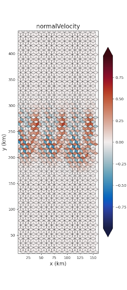
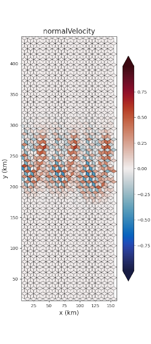

Visualization
Visualization is an optional, but desirable aspect of tasks. Often,
visualization is an optional step of a task but can also be included
as part of other steps such as init or analysis.
Horizontal visualization of MPAS fields is enabled through the use of
mosaic. While developers can write their
own visualization scripts associated with individual tasks, the following
shared visualization routines are provided in polaris.viz:
common matplotlib style
The function polaris.viz.use_mplstyle() loads a common
matplotlib style sheet
that can be used to make font sizes and other plotting options more consistent
across Polaris. The plotting functions described below make use of this common
style. Custom plotting should call polaris.viz.use_mplstyle()
before creating a matplotlib figure.
horizontal fields from planar meshes
polaris.viz.plot_horiz_field() produces a visualization of
horizontal fields at their native mesh location (i.e. cells, edges, or
vertices) at a single vertical level and a single time step. The image file
(png) is saved to the directory from which
polaris.viz.plot_horiz_field() is called.
polaris.viz.plot_horiz_field() is jut a wrapper for
mosaic.polypcolor(), which automatically detects whether the field
to be plotted is defined at cells, edges, or vertices and generates the patches
(i.e. the polygons characterized by the field values) accordingly.
 

{kind=link}
An example function call that uses the default vertical level (top) is:
cell_mask = ds_init.maxLevelCell >= 1
edge_mask = cell_mask_to_edge_mask(ds_init, cell_mask)
plot_horiz_field(ds_mesh, ds['normalVelocity'], 'final_normalVelocity.png',
t_index=t_index, vmin=-max_velocity, vmax=max_velocity,
cmap='cmo.balance', show_patch_edges=True,
field_mask=edge_mask)
The field_mask argument can be any field indicating which horizontal mesh
locations are valid and which are not, but it must be the same shape as data
array being plotted. A typical value for ocean plots is as shown
above: whether there are any active cells in the water column and then the cell
mask is converted to an edges mask using the
polaris.mpas.cell_mask_to_edge_mask() function.
For increased efficiency, you can store the instance of
mosaic.Descriptor returned by plot_horiz_field() and reuse it in
subsequent calls; assuming you are plotting with the same mesh.
cell_mask = ds_init.maxLevelCell >= 1
descriptor = plot_horiz_field(ds_mesh, ds['ssh'], 'plots/ssh.png',
vmin=-720, vmax=0, figsize=figsize,
field_mask=cell_mask)
plot_horiz_field(ds_mesh, ds['bottomDepth'], 'plots/bottomDepth.png',
vmin=0, vmax=720, figsize=figsize, field_mask=cell_mask,
descriptor=descriptor)
edge_mask = cell_mask_to_edge_mask(ds_mesh, cell_mask)
plot_horiz_field(ds_mesh, ds['normalVelocity'], 'plots/normalVelocity.png',
t_index=t_index, vmin=-0.1, vmax=0.1, cmap='cmo.balance',
field_mask=edge_mask, descriptor=descriptor)
...
global lat/lon plots
plotting from spherical MPAS meshes
You can use polaris.viz.plot_global_mpas_field() to plot a field on
a spherical MPAS mesh. Like the planar visualization function, this is also
just a wrapper to mosaic.polypcolor(). Thanks to mosaic variables
defined at cells, edges, and vertices are all support as well as meshes with
culled land boundaries are also supported. While mosaic
supports a variety
of map projection for spherical meshes,
polaris.viz.plot_global_mpas_field() currently only supports
cartopy.crs.PlateCarree.
{kind=link}
Typical usage might be:
import cmocean # noqa: F401
import xarray as xr
from polaris import Step
from polaris.viz import plot_global_mpas_field
class Viz(Step):
def run(self):
ds = xr.open_dataset('initial_state.nc')
da = ds['tracer1'].isel(Time=0, nVertLevels=0)
plot_global_mpas_field(
mesh_filename='mesh.nc', da=da,
out_filename='init.png', config=self.config,
colormap_section='cosine_bell_viz',
title='Tracer at init', plot_land=False,
central_longitude=180.)
The plot_land parameter to polaris.viz.plot_global_mpas_field() is
used to enable or disable continents overlain on top of the data.
The central_longitude defaults to 0.0 and can be set to another value
(typically 180 degrees) for visualizing quantities that would otherwise be
divided across the antimeridian.
The <task>_viz section of the config file must contain config options for
specifying the colormap:
# options for visualization for the cosine bell convergence test case
[cosine_bell_viz]
# colormap options
# colormap
colormap_name = viridis
# the type of norm used in the colormap
norm_type = linear
# A dictionary with keywords for the norm
norm_args = {'vmin': 0., 'vmax': 1.}
colormap_name can be any available matplotlib colormap. For ocean test
cases, we recommend importing cmocean so
the standard ocean colormaps are available.
The norm_type is one of linear (a linear colormap), symlog (a
symmetric log
colormap with a central linear region), or log (a logarithmic colormap).
The norm_args depend on the norm_typ and are the arguments to
matplotlib.colors.Normalize, matplotlib.colors.SymLogNorm,
and matplotlib.colors.LogNorm, respectively.
The config option colorbar_ticks (if it is defined) specifies tick locations
along the colorbar. If it is not specified, they are determined automatically.
plotting from lat/lon grids
You can use polaris.viz.plot_global_lat_lon_field() to plot a field
on a regular lon-lat grid, perhaps after remapping from an MPAS mesh using
polaris.remap.MappingFileStep.
{kind=link}
The plot_land parameter to polaris.viz.plot_global_lat_lon_field()
is used to enable or disable continents overlain on top of the data:
{kind=link}
Typical usage might be:
import cmocean # noqa: F401
import xarray as xr
from polaris import Step
from polaris.viz import plot_global_lat_lon_field
class Viz(Step):
def run(self):
ds = xr.open_dataset('initial_state.nc')
ds = ds[['tracer1']].isel(Time=0, nVertLevels=0)
plot_global_lat_lon_field(
ds.lon.values, ds.lat.values, ds.tracer1.values,
out_filename='init.png', config=self.config,
colormap_section='cosine_bell_viz',
title='Tracer at init', plot_land=False)
The <task>_viz of the config file is the same as what’s used by
polaris.viz.plot_global_mpas_field().